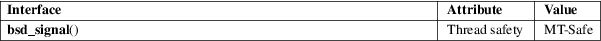

bsd_signal − signal handling with BSD semantics
Standard C library (libc, −lc)
#include <signal.h>
typedef void (*sighandler_t)(int);
sighandler_t bsd_signal(int signum, sighandler_t handler);
Feature Test Macro Requirements for glibc (see feature_test_macros(7)):
bsd_signal():
Since glibc 2.26:
_XOPEN_SOURCE >= 500
&& ! (_POSIX_C_SOURCE >= 200809L)
glibc 2.25 and earlier:
_XOPEN_SOURCE
The bsd_signal() function takes the same arguments, and performs the same task, as signal(2).
The difference between the two is that bsd_signal() is guaranteed to provide reliable signal semantics, that is: a) the disposition of the signal is not reset to the default when the handler is invoked; b) delivery of further instances of the signal is blocked while the signal handler is executing; and c) if the handler interrupts a blocking system call, then the system call is automatically restarted. A portable application cannot rely on signal(2) to provide these guarantees.
The bsd_signal() function returns the previous value of the signal handler, or SIG_ERR on error.
As for signal(2).
For an explanation of the terms used in this section, see attributes(7).

Use of bsd_signal() should be avoided; use sigaction(2) instead.
On modern Linux systems, bsd_signal() and signal(2) are equivalent. But on older systems, signal(2) provided unreliable signal semantics; see signal(2) for details.
The use of sighandler_t is a GNU extension; this type is defined only if the _GNU_SOURCE feature test macro is defined.
None.
4.2BSD, POSIX.1-2001. Removed in POSIX.1-2008, recommending the use of sigaction(2) instead.
sigaction(2), signal(2), sysv_signal(3), signal(7)